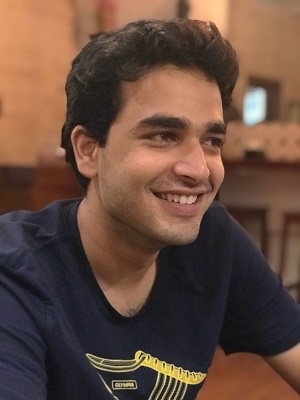
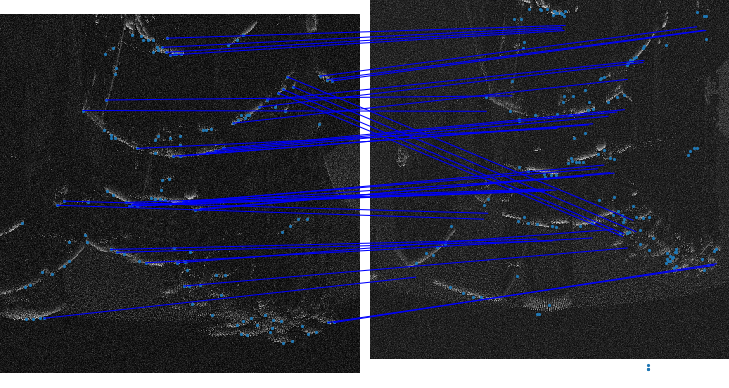
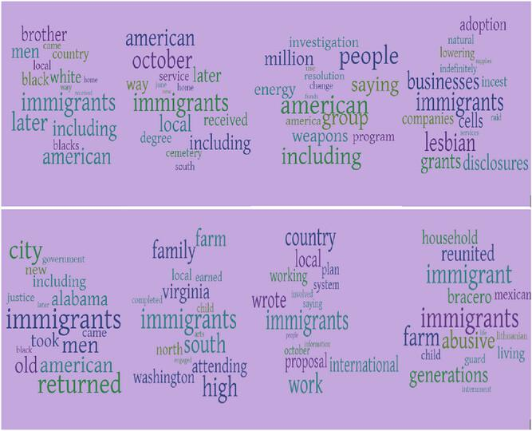
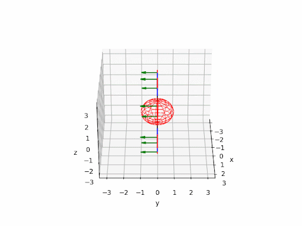
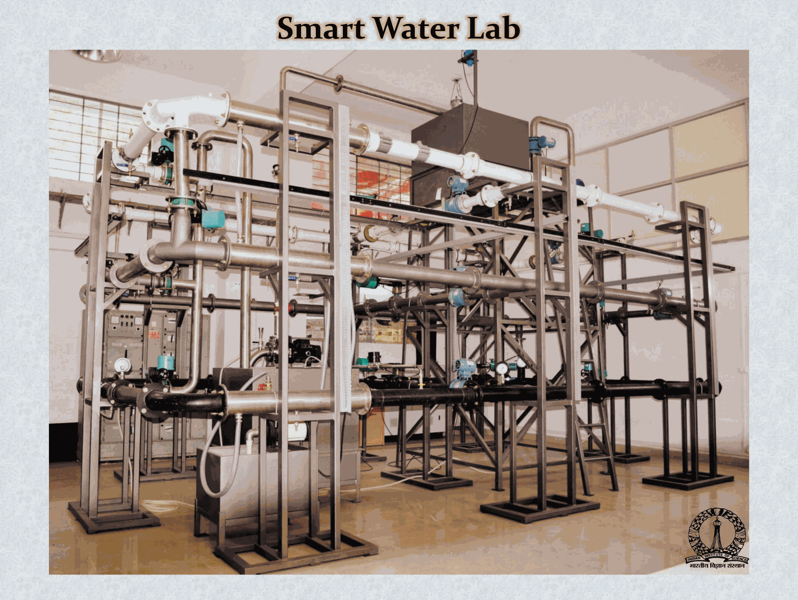
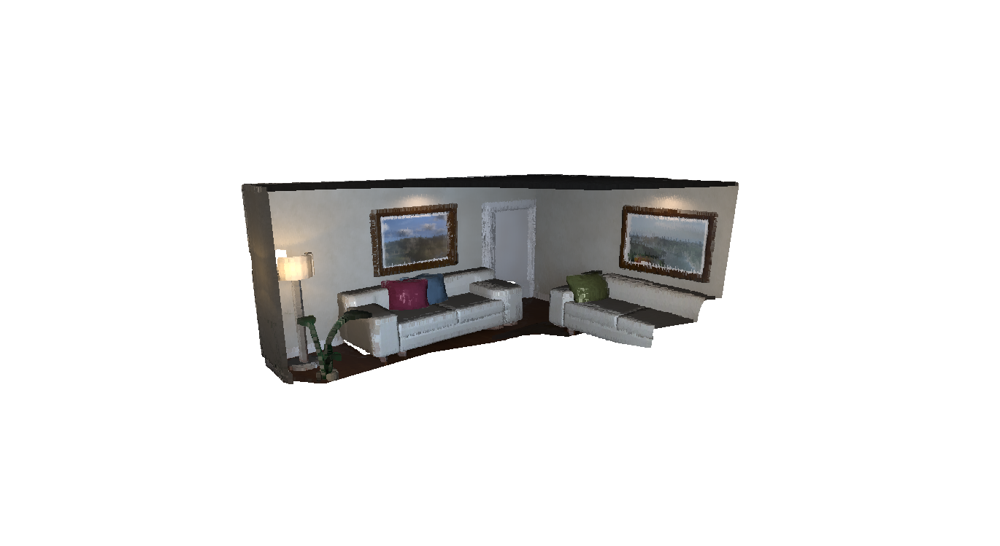
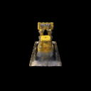
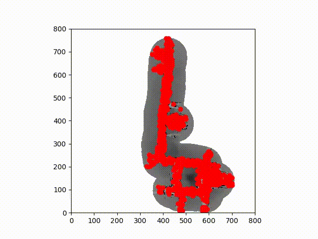
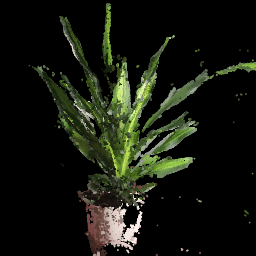

|
Samiran Gode
Hello! I am an ELLIS PhD Student working with Professor Wolfram Burgard. My research interests span a lot of fields but broadly
I work on building robust models for robot perception across multiple modalities - vision, language, sonar, audio etc.
I am a graduate of Carnegie Mellon University where I was fortunate to be a part of the Robot Perception Lab.
At CMU, I worked on Underwater Perception and Object SLAM. I was also a Robotics Software Engineer at a startup where I worked on the localization stack
for a mobile robot system.
Before that I interned with Jupiter's Data Science team, focusing on NLP for FAQ search and user behavior analytics.
Additionally, I contributed to the EqWATER project at IISc, specializing in leak detection for smart water distribution systems. I've also gained valuable experience as an Area Manager Intern at Amazon.
Email /
CV /
Google Scholar /
Github /
Linkedin
|

|
News
- [Jan'24] SONIC accepted at ICRA 2024.
- [Oct'23] Participated in Closing the Loop on Localization workshop at IROS 2023.
- [Oct'23] Presented our work SONIC at the Advanced Marine Robotics Workshop at IROS 2023.
- [Sep'23] Submitted one paper to ICRA'24
- [Aug'23] Our paper was published at the AI Magazine!
- [Feb'23] Presented our work on Understanding Political Polarization using Language Models at AAAI'23 AI4CEW
- [Dec'22] Graduated from CMU!
|
|

|
SONIC: Sonar Image Correspondence using Pose Supervised Learning for Imaging Sonars
Samiran Gode*,
Akshay Hinduja*,
Michael Kaess,
ICRA, 2024
2nd Advanced Marine Robotics TC Workshop IROS, 2023
arXiv
- Solved data association for underwater SLAM through a novel method for sonar image correspondence using Learned Features.
- Introduced a pose-supervised network that generates feature descriptors robust to changes in
viewpoints, enabling more reliable feature matches in sonar based localization and mapping.
|
|

|
Understanding Political Polarization using Language Models: A dataset and method
Samiran Gode,
Supreeth Bare,
Bhiksha Raj,
Hyungon(Clay) Yoo
AI Magazine
The AAAI 2023 Second Workshop on AI for Credible Elections
Journal
/
arXiv
/
Code
- Finetuned Longformer on a scraped Wikipedia dataset to find most important tokens based on attention score.
- Used other conventional techniques such as Word2Vec, Doc2Vec and BERT based models understand words which lead to polarisation.
- Paper accepcted at AAAI 2023 Workshop on AI for credible elections and selected for publication at the AI Magazine Fall 2023.
|
|

|
Quadric SLAM
- Implemented on Object based semantic SLAM, created low-memory metric semantic maps for multi-robot communication.
- Formulated a graph based SLAM. Used quadric factors with the factor graph with underlying visual inertial odometry.
- Designed feature descriptors for SONAR using unsupervised learning for underwater SLAM.
- Used an encoder decoder structure with CNNs with custom loss functions to learn without labels.
|
|

|
Detecting and Localizing Leaks in Intermittent Water Distribution Networks
Samiran Gode,
Sheetal Kumar K R,
Sindhu H J,
P G Prasad,
M S Mohan Kumar,
Rajesh Sundaresan,
- Developed an algorithm for detecting and localizing multiple leaks in Water Distribution Systems with Intermittent water
supply for Bengaluru a city of 8.5mil.(As part of EqWATER funded by Ministry of Human Resources Development, Govern-
ment of India).
- Automated intermittent water supply in an experimental system(60m long*100mm dia network, 4L/s) using LabVIEW to
generate scaled-down comparable data with identical disturbances and leaks analogous to field data.
|
|

|
3D Dense SLAM system using ICP
- Camera Localisation on the ICL-NUIM dataset using Iterative Closest Point Algorithm.
- Used point-based fusion to create a point cloud map
|
|

|
NERF (Volume Rendering and Neural Radiance Fields)
Code
- Implemented a Differentiable Renderer for emission-absorption volumes.
- Implemented a ray sampler for optimising volume parameters.
- Used a MLP to map 3D positions to Volume Density and colour
|
|

|
Particle Filter
- Monte Carlo Localization(MCL) based robot localization for an indoor robot using laser rangefinder and odometry.
- Implemented the raycasting based sensor and motion model along with resampling.
|
|

|
Single View to 3D
Learning 3D representations using single views.
|
|
{kind=link}